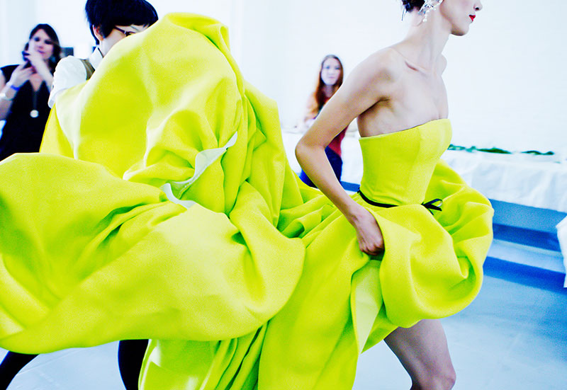

Chartreuse is a color midway between yellow & greenthat was named due of its resemblance
to the green color of one of the French liqueurs called green chartreuse, introduced in 1764.
Etymology
The French word chartreuse means "charter house". The monasteries that the monks of the
Carthusian order (who started producing Chartreuse liqueur in 1764) live in, the first one of which
was established in 1082 by Saint Bruno, are called charter houses because they were chartered—
and given generous material support—by the Duke of Burgundy known as Philip the Bold when he
took over the area in 1378. Philip the Bold's elaborately decorated tomb was initially installed at a
Carthusian charter house when he died in 1404.
Variations of chartreuse?
There are many yellow-greens.
Minadro
The first use in English of the color name mindaro was in 2001, when it was formulated as one of
the colors on the Xona.com Color List.
Lime
Lime is a color that is a representation of the color of the citrus fruit called limes.
The first recorded use of lime green as a color name in English was in 1890!
Pistachio
The color pistachio, also called pistachio green, a representation of the color of the interior meat of
a pistachio nut. It is also a representation of the color of pistachio ice cream (one of the flavors of
ice cream in spumoni), and of pistachio pudding.
The first recorded use of pistachio green as a color name in English was in 1789.
Other visual examples of Chartreuse can be found in Figure 1, Figure 2, and Figure 3.
Figure 1. Chartreuse Series Abstract VII by Ginny Schmidt

Figure 2. Chartreuse Dress by John Wu Figure 3. The famous Chartreuse liqueur, the only liqueur in the world with a completely natural green
colour
Chartreuse (web color)
The web color chartreuse is the color precisely halfway between green and yellow, so it is 50%
green and 50% yellow.
See the 1930s version of “Chartreuse green” in the index and color samples, a color not
as green as the web color chartreuse, but greener than chartreuse yellow—actually it is
a representation of the actual color of green chartreuse liqueur. The first recorded use of
chartreuse green as a color name in English was in 1926.